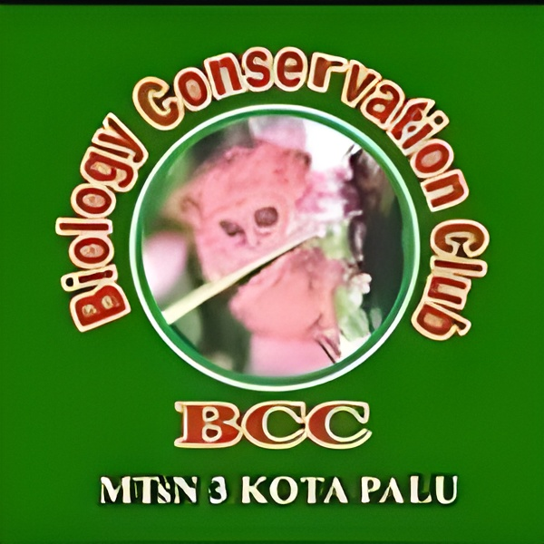

REGIONAL
SULAWESI TENGAH
Cakupan wilayah kerja Biology Conservation Club yang berfokus pada isu-isu konservasi yang ada di provinsi Sulawesi Tengah

MTSN 3 PALU
Ditujukan untuk melibatkan pelajar tingkat sekolah menengah pertama dalam kegiatan konservasi lingkungan sejak usia dini. Dan berperan penting dalam membangun kesadaran dan kecintaan terhadap alam melalui pendekatan yang edukatif dan menyenangkan